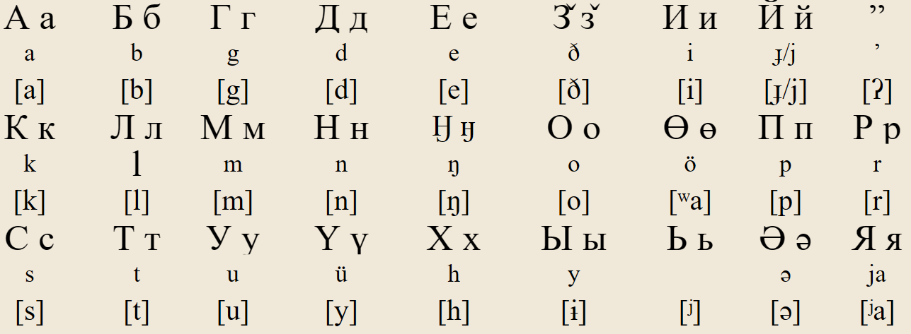
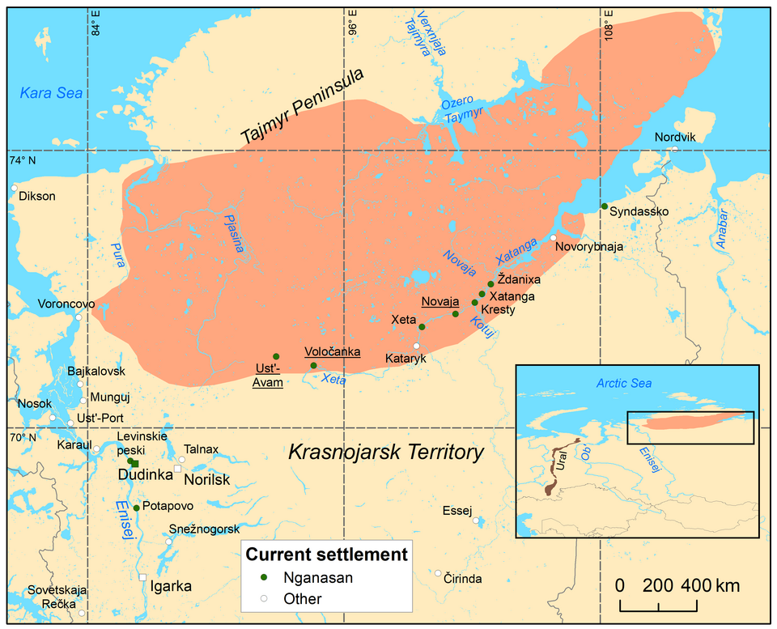
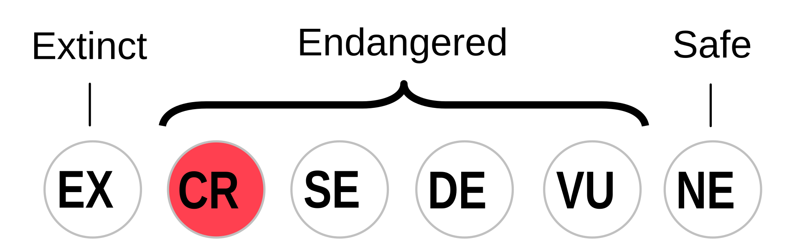

Nganasan (няˮ сиәде, IPA: [nʲaʔ siəðʲe]) is a Samoyedic
language spoken by about 30 Nganasan people. The language is the northernmost
of the entire Eurasian continent, residing on the Taymyr Peninsula in northern Siberia.
The Nganasans reside mostly in Ust-Avam, Volochanka, and Novaya in the
Taymyrsky Dolgano-Nenetsky District of Krasnoyarsk Krai, with smaller populations in some
neighboring areas. The Nganasan and their language are not officially recognized by Russia.
However, to linguists and anthropologists, the Nganasan language is extremely valuable
because it shows the way of life as the northernmost group in Eurasia, and it also serves
as one of the closest living languages we have to Proto-Uralic. Despite everything it has
kept, it also is notable for its own unusual innovations compared to its sibling languages
and Uralic languages as a whole.
Nganasan has a weird contradiction where it is the most divergent of the Samoyedic branch while also being super conservative in other areas that make it important for Proto-Uralic reconstruction. Many words in Nganasan have unknown origin, much more than its neighboring siblings like Nenets and Enets, and to this day the word origins are unsolved. It is possible these words of unknown origin could suggest a possible extinct Siberian language before Russian contact that was later replaced by the Nganasans, though there is not enough evidence to prove it.
| bilabial | dental/ alveolar |
palatal | velar | glottal | |
|---|---|---|---|---|---|
| nasal | m | n | ɲ | ŋ | |
| plosive (voiceless) | p | t | c | k | ʔ |
| plosive (voiced) | b | d | ɟ | ɡ | |
| fricative | ð | h | |||
| sibilant | s | sʲ | |||
| rhotic | r | ||||
| lateral approximant | l | lʲ |
Notes:
| front unrounded |
front rounded |
central | back | |
|---|---|---|---|---|
| close | i | y | ɨ | u |
| mid | e | ə | o | |
| open | ⁱa | a | ᵘa |
I believe /ⁱa/ and /ᵘa/ are in free variation with /ʲa/ and /ʷa/

Note: The letters the letters ё, ж, з, ф, ц, ч, ш, щ, ъ, э, and ю are also used, but only in loanwords.
Бəнде” ӈанасанə” ӈəтукəнды” нендя”туо” ӈонə хонсы хелиде” ӈиле мəнəй (правай). Сытыӈ хонды” ӈиле ӈонда ӈонə сяру, дүзытəндыӈ ихүтүӈ нягəə” сүөарусə”.
All human beings are born free and equal in dignity and rights. They are endowed with reason and conscience and should act towards one another in a spirit of brotherhood.

Traditional distribution of the Nganasan language

Nganasan is classified as “Critically Endangered” by UNESCO